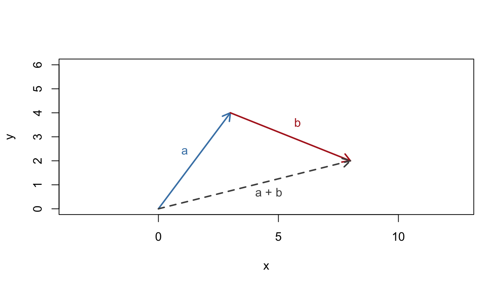
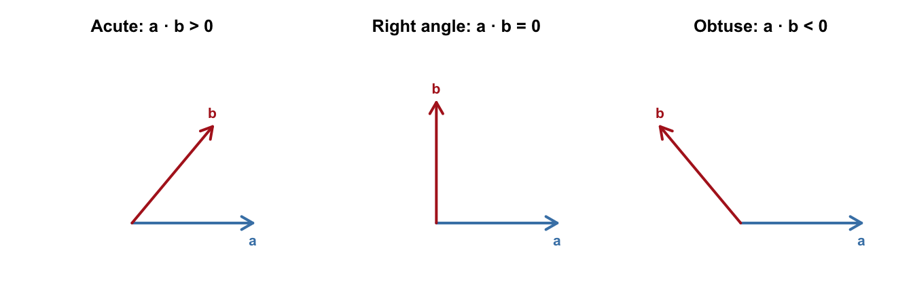
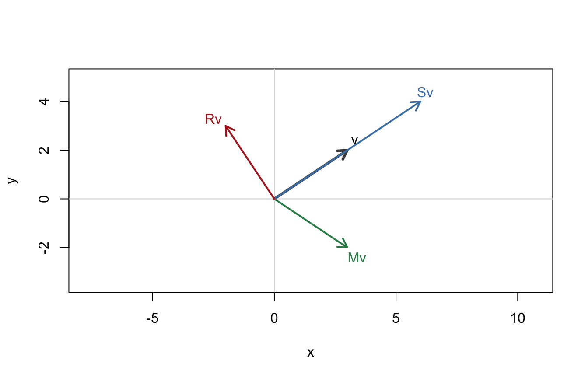
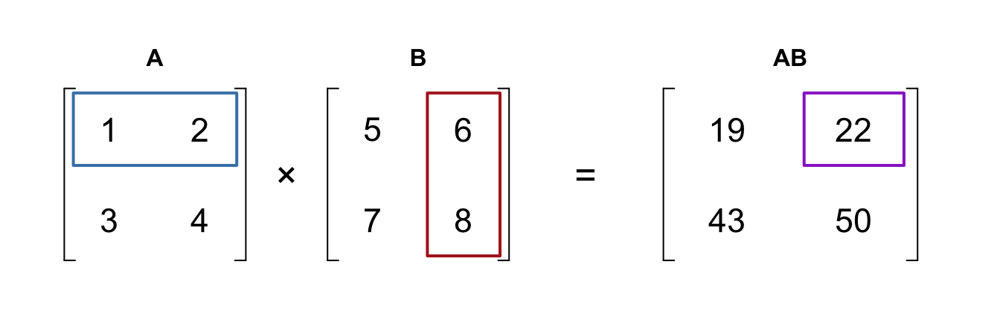
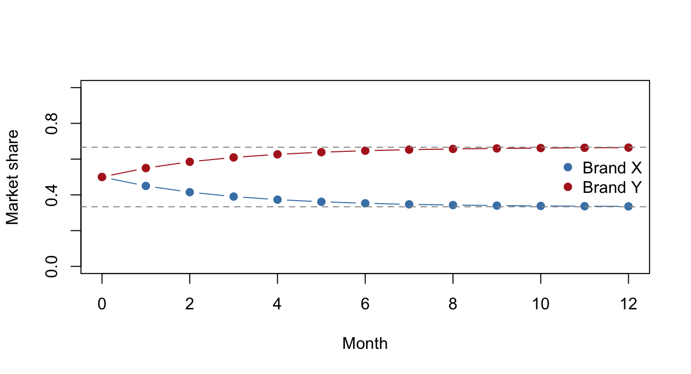

10 Vectors (and a First Look at Matrices)
A single number describes one thing: a price, a quantity, a temperature. But business objects usually have many components at once — a production plan has quantities of several products; a customer has spending in several categories; a location has coordinates. A vector is the mathematical object for exactly this: an ordered list of numbers treated as a single quantity. This closing chapter builds fluency with 2D and 3D vectors, then looks ahead: vectors as data (the language of analytics), the dot product (the one vector-times-vector product you'll use constantly), and matrices — first acting on vectors, then multiplied together — which will dominate your quantitative modules.
Why this matters: University Management Science is multivariable from week one. Functions of several variables, gradients, linear programming, input–output models, Markov chains, regression, machine learning — every one of them is vectors and matrices at heart. The mechanics in this chapter are simple; the payoff is that nothing in first year will look alien.
10.1 Two-dimensional vectors
10.1.1 Key idea
A 2D vector is a pair of components, written as a column \(\mathbf{v} = \begin{pmatrix} 3 \\ 4 \end{pmatrix}\) or inline as \((3, 4)\). Geometrically it is an arrow: 3 across, 4 up — and any arrow with the same length and direction is the same vector, wherever it starts.
- Magnitude (length), by Pythagoras: \(|\mathbf{v}| = \sqrt{x^2 + y^2}\).
- Direction: the angle the arrow makes, found from \(\tan\theta = \tfrac{y}{x}\) — with a sketch to pick the right quadrant.
Vectors and scalars are different species: a scalar is one number; a vector is a package of numbers with a direction. Keep the notation distinct (\(\mathbf{v}\) or \(\underline{v}\) for vectors).
10.1.2 Worked examples
Example (simple). Find the magnitude and direction of \(\mathbf{v} = \begin{pmatrix} 3 \\ 4 \end{pmatrix}\).
\(|\mathbf{v}| = \sqrt{9 + 16} = 5\); direction \(\theta = \tan^{-1}\!\big(\tfrac{4}{3}\big) \approx 53.1°\) above the positive \(x\)-direction.
Example (moderate). Find the magnitude and direction of \(\mathbf{a} = \begin{pmatrix} -2 \\ 5 \end{pmatrix}\).
\(|\mathbf{a}| = \sqrt{4 + 25} = \sqrt{29} \approx 5.39\). A sketch shows the arrow points up-and-left (second quadrant): the acute reference angle is \(\tan^{-1}\!\big(\tfrac{5}{2}\big) \approx 68.2°\), so the direction is \(180° - 68.2° = 111.8°\) from the positive \(x\)-direction. Never skip the sketch — the calculator's \(\tan^{-1}\) alone can't tell the second quadrant from the fourth.
Example (challenging — resultant vs distance travelled). A delivery drone flies displacement \(\begin{pmatrix} 3 \\ 4 \end{pmatrix}\) km, then \(\begin{pmatrix} 5 \\ -2 \end{pmatrix}\) km. Find (a) its final displacement from base, (b) how far it is from base, and (c) the total distance it has flown — and explain why (b) and (c) differ.
Add components: \(\begin{pmatrix} 3 \\ 4 \end{pmatrix} + \begin{pmatrix} 5 \\ -2 \end{pmatrix} = \begin{pmatrix} 8 \\ 2 \end{pmatrix}\) km.
\(\left|\begin{pmatrix} 8 \\ 2 \end{pmatrix}\right| = \sqrt{68} \approx 8.25\) km from base.
Distance flown is the sum of the two legs' lengths: \(5 + \sqrt{29} \approx 10.39\) km.
The drone flew 10.39 km but ends only 8.25 km from home — magnitudes don't add unless the legs point the same way. In symbols: \(|\mathbf{a} + \mathbf{b}| \le |\mathbf{a}| + |\mathbf{b}|\), the triangle inequality, and the battery pays for (c) while the crow flies (b).
10.1.3 Practice exercises
- Find the magnitude and direction of \(\begin{pmatrix} 5 \\ 12 \end{pmatrix}\).
- Find the magnitude and direction of \(\begin{pmatrix} -6 \\ -8 \end{pmatrix}\) (sketch first!).
- A courier cycles \(\begin{pmatrix} 2 \\ 3 \end{pmatrix}\) km then \(\begin{pmatrix} 4 \\ -1 \end{pmatrix}\) km. Find the resultant displacement, its magnitude, and the total distance cycled.
Common mistakes:
- Adding magnitudes instead of components: \(|\mathbf{a} + \mathbf{b}| \ne |\mathbf{a}| + |\mathbf{b}|\) in general.
- Quadrant errors in direction — the calculator's \(\tan^{-1}\) only returns angles between \(-90°\) and \(90°\); the sketch supplies the correction.
- Writing vectors as scalars: \(\mathbf{v} = 5\) is meaningless if \(\mathbf{v}\) has components; its magnitude is 5.
10.2 Three-dimensional vectors
10.2.1 Key idea
Nothing new except a third component: \(\mathbf{v} = \begin{pmatrix} x \\ y \\ z \end{pmatrix}\), with magnitude by "Pythagoras twice":
\[|\mathbf{v}| = \sqrt{x^2 + y^2 + z^2}.\]
Addition and scaling work componentwise exactly as in 2D — and, importantly, so they do in 4, 5, or 500 dimensions. Once the picture runs out at three, the algebra keeps going; that observation carries the whole of Section 10.5.
10.2.2 Worked examples
Example (simple). Find \(\left|\begin{pmatrix} 1 \\ 2 \\ 2 \end{pmatrix}\right|\).
\(\sqrt{1 + 4 + 4} = 3\).
Example (moderate). Find \(\left|\begin{pmatrix} 2 \\ -3 \\ 6 \end{pmatrix}\right|\), and write down a vector in the same direction with magnitude 1.
\(\sqrt{4 + 9 + 36} = 7\). Dividing by the magnitude gives the unit vector \(\tfrac{1}{7}\begin{pmatrix} 2 \\ -3 \\ 6 \end{pmatrix} = \begin{pmatrix} 2/7 \\ -3/7 \\ 6/7 \end{pmatrix}\) — same direction, length 1.
Example (challenging — a product as a point in three dimensions). A laptop model is summarised by three standardised scores: (performance, battery, portability) \(= (4, 2, 5)\). A rival scores \((3, 4, 4)\). Which is "bigger" overall is ambiguous — but which is closer to the ideal spec \((5, 5, 5)\)?
Distances to the ideal (subtract, then take magnitude — formalised in Section 10.4):
\[\left|\begin{pmatrix} 4 \\ 2 \\ 5 \end{pmatrix} - \begin{pmatrix} 5 \\ 5 \\ 5 \end{pmatrix}\right| = \sqrt{1 + 9 + 0} = \sqrt{10} \approx 3.16, \qquad \left|\begin{pmatrix} 3 \\ 4 \\ 4 \end{pmatrix} - \begin{pmatrix} 5 \\ 5 \\ 5 \end{pmatrix}\right| = \sqrt{4 + 1 + 1} = \sqrt{6} \approx 2.45.\]
The rival sits closer to the ideal. Products as points, comparisons as distances — you've just done multi-attribute product analysis with A-level vectors.
10.2.3 Practice exercises
- Find the magnitude of \(\begin{pmatrix} 2 \\ 6 \\ -3 \end{pmatrix}\).
- Find the unit vector in the direction of \(\begin{pmatrix} 0 \\ 3 \\ 4 \end{pmatrix}\).
- Candidate A scores \((5, 3, 2)\) and candidate B scores \((4, 4, 3)\) on three interview criteria. Which is closer to the target profile \((5, 4, 4)\)?
Common mistakes:
- Forgetting to square the negative components — \((-3)^2 = +9\); magnitudes are never reduced by minus signs.
- Trying to assign a single "direction angle" in 3D — direction in 3D needs more than one angle (or a unit vector, which is the cleaner habit).
Self-check: magnitudes, unit vectors and distances
Q1. Find the magnitude of \(\begin{pmatrix} 8 \\ 6 \end{pmatrix}\):
Q2. Find the magnitude of \(\begin{pmatrix} 2 \\ -1 \\ 2 \end{pmatrix}\):
Q3. Which of the following is the unit vector in the direction of \(\begin{pmatrix} 6 \\ 8 \end{pmatrix}\)?
- \(\begin{pmatrix} 3/5 \\ 4/5 \end{pmatrix}\)
- \(\begin{pmatrix} 3/7 \\ 4/7 \end{pmatrix}\)
- \(\begin{pmatrix} 1/6 \\ 1/8 \end{pmatrix}\)
- \(\begin{pmatrix} 3 \\ 4 \end{pmatrix}\)
Answer:
Q4. The unit vector in the direction of \(\begin{pmatrix} 0 \\ 5 \\ 12 \end{pmatrix}\) can be written \(\dfrac{1}{k}\begin{pmatrix} 0 \\ 5 \\ 12 \end{pmatrix}\). Give \(k\):
Q5. Two interview candidates score \((4, 5, 3)\) and \((5, 3, 5)\) against a target profile of \((5, 5, 5)\). Measured by distance in three dimensions, the closer match is
Q1. \(\sqrt{64 + 36} = \sqrt{100} = 10\).
Q2. \(\sqrt{4 + 1 + 4} = 3\). The middle term is \((-1)^2 = +1\) — a minus sign never shrinks a magnitude.
Q3. (A). The magnitude is \(\sqrt{36 + 64} = 10\), so divide both components by 10. Trap (B) divides by \(6 + 8 = 14\) — components don't add to give length; Pythagoras is not optional. Trap (D) cancels the common factor 2, which gives a shorter parallel vector of length 5, not length 1 — simplifying is not normalising. Check: \(\sqrt{(3/5)^2 + (4/5)^2} = \sqrt{9/25 + 16/25} = 1\) ✓.
Q4. \(k\) is the magnitude: \(\sqrt{0 + 25 + 144} = 13\).
Q5. The second candidate. Distances to the target: first candidate \(\sqrt{1 + 0 + 4} = \sqrt{5} \approx 2.24\); second \(\sqrt{0 + 4 + 0} = 2\). Subtract, then take the magnitude — comparing total scores (12 vs 13) answers a different question, since it can't see that the first candidate misses the target badly on one criterion.
10.3 Vector operations
10.3.1 Key idea
Two operations, both componentwise, both with clean geometric meanings:
- Addition: \(\mathbf{a} + \mathbf{b}\) adds components; geometrically, place the arrows tip-to-tail and take the arrow from start to finish (the drone example).
- Scalar multiplication: \(k\mathbf{a}\) multiplies every component by \(k\); geometrically it stretches the arrow by factor \(k\) (reversing it if \(k < 0\)), leaving the direction otherwise unchanged.
Consequences worth knowing: \(\mathbf{a}\) and \(\mathbf{b}\) are parallel exactly when one is a scalar multiple of the other; and expressions like \(x\mathbf{a} + y\mathbf{b}\) — linear combinations — build new vectors from old ones. Linear combinations are the single most important construction in university mathematics; meet them here in a friendly setting.

Figure 10.1: Tip-to-tail addition: the resultant (dashed) runs from the start of a to the tip of b.
10.3.2 Worked examples
Example (simple). For \(\mathbf{a} = \begin{pmatrix} 2 \\ 1 \end{pmatrix}\) and \(\mathbf{b} = \begin{pmatrix} -1 \\ 3 \end{pmatrix}\), find \(\mathbf{a} + \mathbf{b}\), \(3\mathbf{a}\) and \(2\mathbf{a} - \mathbf{b}\).
\[\mathbf{a} + \mathbf{b} = \begin{pmatrix} 1 \\ 4 \end{pmatrix}, \qquad 3\mathbf{a} = \begin{pmatrix} 6 \\ 3 \end{pmatrix}, \qquad 2\mathbf{a} - \mathbf{b} = \begin{pmatrix} 5 \\ -1 \end{pmatrix}.\]
Example (moderate). Is \(\begin{pmatrix} 6 \\ -4 \end{pmatrix}\) parallel to \(\begin{pmatrix} -9 \\ 6 \end{pmatrix}\)?
Test for a scalar multiple: \(-9 = k \times 6\) gives \(k = -1.5\), and indeed \(6 = -1.5 \times (-4)\) ✓. Parallel (pointing opposite ways, since \(k < 0\)).
Example (challenging — a production plan as a linear combination). Each unit of product \(P_1\) consumes \(\begin{pmatrix} 3 \\ 2 \end{pmatrix}\) (labour hours, kg of material); each unit of \(P_2\) consumes \(\begin{pmatrix} 1 \\ 4 \end{pmatrix}\). The factory plans to make 10 units of \(P_1\) and 5 of \(P_2\). Find the total resource requirement, and check it against a capacity of 40 labour hours and 45 kg.
Total requirement is the linear combination
\[10\begin{pmatrix} 3 \\ 2 \end{pmatrix} + 5\begin{pmatrix} 1 \\ 4 \end{pmatrix} = \begin{pmatrix} 30 \\ 20 \end{pmatrix} + \begin{pmatrix} 5 \\ 20 \end{pmatrix} = \begin{pmatrix} 35 \\ 40 \end{pmatrix}.\]
The plan needs 35 hours (within 40 ✓) and 40 kg (within 45 ✓): feasible. Asking "which feasible plan is best?" is precisely a linear programming problem — the iso-profit lines of Section 4.3 sweeping across plans like this one. Hold this example in mind; it returns in Section 10.7 wearing a matrix.
10.3.3 Practice exercises
- For \(\mathbf{a} = \begin{pmatrix} 4 \\ -2 \end{pmatrix}\), \(\mathbf{b} = \begin{pmatrix} 1 \\ 5 \end{pmatrix}\): find \(\mathbf{a} + 2\mathbf{b}\) and \(|\mathbf{a} - \mathbf{b}|\).
- Find the value of \(t\) for which \(\begin{pmatrix} t \\ 6 \end{pmatrix}\) is parallel to \(\begin{pmatrix} 2 \\ 3 \end{pmatrix}\).
- Products \(P_1\) and \(P_2\) consume \(\begin{pmatrix} 2 \\ 5 \end{pmatrix}\) and \(\begin{pmatrix} 3 \\ 1 \end{pmatrix}\) (hours, kg) per unit. Find the total resource vector for 8 units of \(P_1\) and 4 units of \(P_2\).
Common mistakes:
- Mixing components while adding — line the vectors up as columns and add across rows.
- Concluding "not parallel" after checking only one component ratio — all component ratios must agree.
- Multiplying two vectors together componentwise and expecting it to mean something — it doesn't. The useful vector-times-vector product is the dot product (Section 10.6), and its answer is a single number, not a vector.
10.4 Position vectors and distances
10.4.1 Key idea
Fix an origin; then every point \(A\) is captured by its position vector \(\mathbf{a} = \overrightarrow{OA}\). The vector from \(A\) to \(B\) is
\[\overrightarrow{AB} = \mathbf{b} - \mathbf{a} \qquad (\text{"destination minus start"}),\]
and the distance between the points is \(|\overrightarrow{AB}| = |\mathbf{b} - \mathbf{a}|\) — the distance formula of coordinate geometry (Chapter 4), now in vector clothing, and valid in any number of dimensions.
10.4.2 Worked examples
Example (simple). \(A = (1, 2)\) and \(B = (4, 6)\). Find \(\overrightarrow{AB}\) and the distance \(AB\).
\[\overrightarrow{AB} = \begin{pmatrix} 4 - 1 \\ 6 - 2 \end{pmatrix} = \begin{pmatrix} 3 \\ 4 \end{pmatrix}, \qquad AB = 5.\]
Example (moderate). \(A = (2, 1)\) and \(B = (5, 7)\). Find the position vector of the midpoint \(M\) of \(AB\).
\[\mathbf{m} = \tfrac{1}{2}(\mathbf{a} + \mathbf{b}) = \tfrac{1}{2}\begin{pmatrix} 7 \\ 8 \end{pmatrix} = \begin{pmatrix} 3.5 \\ 4 \end{pmatrix}.\]
(Averaging position vectors averages the points — a fact that scales up: the average of many position vectors is the centroid, which returns in Section 10.5.)
Example (challenging — comparing depot sites). Three stores sit at grid positions \((1, 5)\), \((4, 1)\) and \((7, 6)\) (km). Two candidate depot sites are \(P = (4, 4)\) and \(Q = (3, 4)\). Which site has the smaller total distance to the stores?
From \(P\): \(\sqrt{(1-4)^2 + (5-4)^2} = \sqrt{10} \approx 3.16\); \(\sqrt{0 + 9} = 3\); \(\sqrt{9 + 4} = \sqrt{13} \approx 3.61\). Total \(\approx 9.77\) km.
From \(Q\): \(\sqrt{4 + 1} = \sqrt{5} \approx 2.24\); \(\sqrt{1 + 9} = \sqrt{10} \approx 3.16\); \(\sqrt{16 + 4} = \sqrt{20} \approx 4.47\). Total \(\approx 9.87\) km.
\(P\) wins, narrowly. This is a two-candidate version of the facility location problem — a genuine operations-research problem whose full version (optimise over all possible sites) needs the multivariable optimisation this chapter is preparing you for.
10.4.3 Practice exercises
- \(A = (2, -1)\) and \(B = (7, 11)\). Find \(\overrightarrow{AB}\) and the distance \(AB\).
- Find the midpoint of \(A = (-2, 3)\) and \(B = (6, -1)\).
- Stores sit at \((0, 4)\), \((5, 0)\) and \((6, 7)\). Which candidate depot, \((3, 3)\) or \((4, 4)\), gives the smaller total distance?
Common mistakes:
- \(\overrightarrow{AB} = \mathbf{b} - \mathbf{a}\), not \(\mathbf{a} - \mathbf{b}\): destination minus start. Getting it backwards reverses every direction (though — small mercy — distances survive).
- Confusing a point with its position vector conceptually — the vector runs from the origin to the point. Interchangeable in calculations, but keep the picture straight.
Self-check: position vectors, distances and midpoints
Q1. \(A = (1, 3)\) and \(B = (6, 15)\). The components of \(\overrightarrow{AB}\) are \(x =\) and \(y =\)
Q2. For the same points, the distance \(AB\) is
Q3. \(A = (2, 7)\) and \(B = (5, 1)\). Which of the following is \(\overrightarrow{AB}\)?
- \(\begin{pmatrix} -3 \\ 6 \end{pmatrix}\)
- \(\begin{pmatrix} 3 \\ -6 \end{pmatrix}\)
- \(\begin{pmatrix} 7 \\ 8 \end{pmatrix}\)
- \(\begin{pmatrix} 3 \\ 6 \end{pmatrix}\)
Answer:
Q4. The midpoint of \(A = (-2, 5)\) and \(B = (6, -1)\) is the point \((x, y)\) with \(x =\) and \(y =\)
Q5. Stores sit at \((1, 1)\), \((5, 2)\) and \((3, 6)\). Two candidate depot sites are \(P = (3, 3)\) and \(Q = (3, 2)\). The smaller total distance to the three stores is achieved by
Q1. \(\overrightarrow{AB} = \mathbf{b} - \mathbf{a} = (6 - 1,\ 15 - 3) = (5, 12)\): destination minus start.
Q2. \(|\overrightarrow{AB}| = \sqrt{25 + 144} = 13\).
Q3. (B). \(\overrightarrow{AB} = (5 - 2,\ 1 - 7) = (3, -6)\). Trap (A) is \(\mathbf{a} - \mathbf{b}\) — the vector from \(B\) to \(A\), exactly backwards. A sketch settles it: moving from \(A(2,7)\) to \(B(5,1)\) goes right and down, so the \(y\)-component must be negative. Trap (C) adds the position vectors, which lands nowhere useful.
Q4. Midpoint \(= \tfrac{1}{2}(\mathbf{a} + \mathbf{b}) = \tfrac{1}{2}\begin{pmatrix} 4 \\ 4 \end{pmatrix} = (2, 2)\).
Q5. \(P\). From \(P\): \(\sqrt{8} + \sqrt{5} + 3 \approx 2.83 + 2.24 + 3.00 = 8.07\). From \(Q\): \(\sqrt{5} + 2 + 4 \approx 8.24\). Three distances, one sum, one comparison — a two-candidate facility location problem, just like the worked example.
10.5 Vectors as data
10.5.1 Key idea
Here is the syllabus's "preparing for data vectors and feature spaces" — and the biggest idea in the chapter. Drop the arrows; keep the algebra. A data vector is any record written as an ordered list of numbers:
\[\text{customer } \mathbf{u} = \begin{pmatrix} \text{spend on groceries} \\ \text{spend on clothing} \\ \text{spend on travel} \end{pmatrix}.\]
Every operation you've practised now has a data meaning:
- Distance \(|\mathbf{u} - \mathbf{v}|\) measures how similar two records are — small distance, similar customers.
- The mean \(\tfrac{1}{n}(\mathbf{u}_1 + \dots + \mathbf{u}_n)\) is the average record (the centroid) — the "typical customer".
- Scalar multiplication rescales a record — \(1.1\mathbf{u}\) is customer \(\mathbf{u}\) with 10% higher spending across the board.
The space these vectors live in is called feature space, and it might have hundreds of dimensions — unpicturable, but the formulas are the same ones you used for arrows.
10.5.2 Worked examples
Example (simple). Customers' quarterly spend (£) across (groceries, clothing, travel): \(\mathbf{u} = (120, 40, 60)\) and \(\mathbf{v} = (110, 50, 55)\). How similar are they?
\[|\mathbf{u} - \mathbf{v}| = \left|\begin{pmatrix} 10 \\ -10 \\ 5 \end{pmatrix}\right| = \sqrt{100 + 100 + 25} = 15.\]
A £15 separation across the whole profile — very similar customers.
Example (moderate). A third customer spends \(\mathbf{w} = (20, 150, 10)\). Compare \(|\mathbf{u} - \mathbf{w}|\) with the distance above, and find the centroid of all three customers.
\[|\mathbf{u} - \mathbf{w}| = \sqrt{100^2 + 110^2 + 50^2} = \sqrt{24600} \approx 157.\]
Ten times further away: \(\mathbf{w}\) (low groceries, high clothing) belongs to a different customer segment. Centroid:
\[\tfrac{1}{3}(\mathbf{u} + \mathbf{v} + \mathbf{w}) = \tfrac{1}{3}\begin{pmatrix} 250 \\ 240 \\ 125 \end{pmatrix} = \begin{pmatrix} 83.3 \\ 80 \\ 41.7 \end{pmatrix}.\]
Example (challenging — a one-line recommendation engine). A streaming service scores each user's taste across four genres. Anna is \(\mathbf{a} = (8, 2, 5, 1)\); the service wants to show her the "customers like you also watched" list built from Ben \(\mathbf{b} = (7, 3, 5, 2)\) or Carla \(\mathbf{c} = (2, 8, 1, 6)\). Whose history should it use?
\[|\mathbf{a} - \mathbf{b}| = \sqrt{1 + 1 + 0 + 1} = \sqrt{3} \approx 1.73, \qquad |\mathbf{a} - \mathbf{c}| = \sqrt{36 + 36 + 16 + 25} = \sqrt{113} \approx 10.63.\]
Ben, by a mile. Congratulations: "find the nearest vector" is the nearest-neighbour method, one of the oldest and most-used ideas in machine learning — recommendation, credit scoring and customer segmentation all begin exactly here, just with more dimensions and more neighbours. (Real systems refine the distance measure and standardise the scales, but the skeleton is this calculation.)
10.5.3 Practice exercises
- Products are scored on (quality, value, style): \(\mathbf{p} = (7, 5, 6)\) and \(\mathbf{q} = (4, 9, 5)\). Find the distance between them.
- Three branches record (weekday, weekend) sales: \((30, 45)\), \((38, 41)\), \((25, 52)\) (£000s). Find the centroid, and interpret it in one sentence.
- A target customer profile is \((6, 6, 6)\). Which of \((5, 7, 6)\) and \((8, 3, 7)\) is the nearer match?
Common mistakes:
- Comparing raw distances when components have wildly different scales (pounds vs counts vs ratings) — big-unit components dominate. At university you'll standardise first; for now, just be aware.
- Forgetting that these are the same operations as the geometric ones — no new formulas were introduced in this section, only new interpretations.
Why this matters: Analytics is vector arithmetic at scale. Clustering finds groups of mutually close data vectors; classification asks which labelled vectors a new one is nearest to; regression and machine-learning models are functions of feature vectors, trained by nudging a parameter vector downhill — using the gradient, a vector of the partial derivatives you'll build from Chapter 7. This little section is the bridge between A-level and all of that.
10.6 The dot product
10.6.1 Key idea
Section 10.3 warned that multiplying two vectors component by component doesn't give anything useful. There is one vector-times-vector product that earns its keep everywhere, though, and it is refreshingly simple: the dot product (also called the scalar product — if you took Further Mathematics you may have met it under that name). For two vectors of the same length, multiply matching components and add up:
\[\mathbf{a} \cdot \mathbf{b} = a_1 b_1 + a_2 b_2 + \dots + a_n b_n.\]
For example, \(\begin{pmatrix} 2 \\ 3 \end{pmatrix} \cdot \begin{pmatrix} 4 \\ 1 \end{pmatrix} = 2(4) + 3(1) = 11\). Three facts to hold on to:
- The answer is a single number (a scalar), not a vector.
- Both vectors must have the same number of components — \((1, 2) \cdot (1, 2, 3)\) is undefined.
- \(\mathbf{a} \cdot \mathbf{a} = a_1^2 + a_2^2 + \dots = |\mathbf{a}|^2\): the magnitude you've been computing all chapter is a dot product in disguise.
It also behaves politely: order doesn't matter (\(\mathbf{a} \cdot \mathbf{b} = \mathbf{b} \cdot \mathbf{a}\)), it spreads over addition (\(\mathbf{a} \cdot (\mathbf{b} + \mathbf{c}) = \mathbf{a} \cdot \mathbf{b} + \mathbf{a} \cdot \mathbf{c}\)), and scalars slide out (\((k\mathbf{a}) \cdot \mathbf{b} = k(\mathbf{a} \cdot \mathbf{b})\)).
The geometric meaning. Place the two arrows tail to tail and let \(\theta\) be the angle between them. Then
\[\mathbf{a} \cdot \mathbf{b} = |\mathbf{a}|\,|\mathbf{b}| \cos\theta, \qquad \text{so} \qquad \cos\theta = \frac{\mathbf{a} \cdot \mathbf{b}}{|\mathbf{a}|\,|\mathbf{b}|}.\]
The dot product measures how much two vectors point the same way. Since magnitudes are positive, its sign alone tells you about the angle:
- \(\mathbf{a} \cdot \mathbf{b} > 0\): acute angle — broadly the same direction;
- \(\mathbf{a} \cdot \mathbf{b} = 0\): right angle — the vectors are perpendicular (non-zero vectors only);
- \(\mathbf{a} \cdot \mathbf{b} < 0\): obtuse angle — broadly opposing directions.

Figure 10.2: The sign of the dot product tells you whether the angle between two vectors is acute, a right angle, or obtuse.
10.6.2 Worked examples: computing dot products
Example (simple). Find \(\begin{pmatrix} 2 \\ 3 \end{pmatrix} \cdot \begin{pmatrix} 4 \\ -1 \end{pmatrix}\) and \(\begin{pmatrix} 1 \\ 2 \\ 3 \end{pmatrix} \cdot \begin{pmatrix} 4 \\ 0 \\ -2 \end{pmatrix}\).
\[2(4) + 3(-1) = 8 - 3 = 5, \qquad 1(4) + 2(0) + 3(-2) = 4 + 0 - 6 = -2.\]
One number each time. The second is negative, so those two vectors make an obtuse angle.
Example (moderate). For \(\mathbf{a} = \begin{pmatrix} 3 \\ -1 \\ 2 \end{pmatrix}\), \(\mathbf{b} = \begin{pmatrix} 1 \\ 4 \\ 0 \end{pmatrix}\) and \(\mathbf{c} = \begin{pmatrix} 2 \\ 1 \\ 5 \end{pmatrix}\), find \(\mathbf{a} \cdot \mathbf{a}\) and \(\mathbf{a} \cdot (\mathbf{b} + \mathbf{c})\).
\(\mathbf{a} \cdot \mathbf{a} = 9 + 1 + 4 = 14\), so \(|\mathbf{a}| = \sqrt{14}\) — the usual magnitude, reached by a different road.
For the second, either add first — \(\mathbf{b} + \mathbf{c} = (3, 5, 5)\), so \(\mathbf{a} \cdot (\mathbf{b} + \mathbf{c}) = 9 - 5 + 10 = 14\) — or use the distributive law: \(\mathbf{a} \cdot \mathbf{b} = 3 - 4 + 0 = -1\) and \(\mathbf{a} \cdot \mathbf{c} = 6 - 1 + 10 = 15\), total \(14\) ✓. Both routes agree, as they must.
Example (challenging — revenue, cost and profit as dot products). A bakery sells bread, pastries and cakes at prices \(\mathbf{p} = (12, 8, 15)\) (£ per tray). Today it sells \(\mathbf{q} = (40, 25, 10)\) trays, and the unit costs are \(\mathbf{c} = (7, 5, 9)\). Find the revenue, the total cost and the profit.
Revenue is "price times quantity, summed over products" — which is exactly a dot product:
\[R = \mathbf{p} \cdot \mathbf{q} = 12(40) + 8(25) + 15(10) = 480 + 200 + 150 = 830,\]
so revenue is £830.
Likewise total cost \(C = \mathbf{c} \cdot \mathbf{q} = 280 + 125 + 90 = 495\), i.e. £495, so profit is £830 − £495 = £335.
Or, in one step, using the distributive law: the per-tray margin vector is \(\mathbf{p} - \mathbf{c} = (5, 3, 6)\), and
\[\Pi = (\mathbf{p} - \mathbf{c}) \cdot \mathbf{q} = 5(40) + 3(25) + 6(10) = 200 + 75 + 60 = 335,\]
the same £335 ✓.
With three products this is ordinary arithmetic; with 3,000 products it is still one dot product, which is why spreadsheets have SUMPRODUCT and why linear programming writes every objective as \(\mathbf{c} \cdot \mathbf{x}\).
10.6.3 Practice exercises
- Find \(\begin{pmatrix} 3 \\ -2 \end{pmatrix} \cdot \begin{pmatrix} 5 \\ 4 \end{pmatrix}\).
- Find \(\begin{pmatrix} 2 \\ -1 \\ 4 \end{pmatrix} \cdot \begin{pmatrix} 3 \\ 5 \\ -1 \end{pmatrix}\). What does the sign tell you about the angle between the vectors?
- A café sells coffee, tea and cake at prices \((3.20, 2.50, 4.00)\) (£). Today's sales are \((150, 60, 45)\) and the unit costs are \((0.90, 0.40, 1.60)\). Find the revenue, the total cost and the profit, then check the profit with a single dot product.
- An investor puts weights \(\mathbf{w} = (0.5, 0.3, 0.2)\) of her money into three funds whose annual returns are \(\mathbf{r} = (6\%, 10\%, -2\%)\). The portfolio return is \(\mathbf{w} \cdot \mathbf{r}\). Find it.
10.6.4 Worked examples: angles, perpendicularity and similarity
Example (simple — a perpendicularity test). Are \(\begin{pmatrix} 2 \\ 5 \end{pmatrix}\) and \(\begin{pmatrix} 5 \\ -2 \end{pmatrix}\) perpendicular?
\(2(5) + 5(-2) = 10 - 10 = 0\). Yes. No angles, no sketch — a zero dot product settles it.
Example (moderate — finding an angle and an unknown). (a) Find the angle between \(\mathbf{a} = \begin{pmatrix} 1 \\ 2 \\ 2 \end{pmatrix}\) and \(\mathbf{b} = \begin{pmatrix} 3 \\ 0 \\ 4 \end{pmatrix}\). (b) Find \(t\) so that \(\begin{pmatrix} t \\ 4 \end{pmatrix}\) is perpendicular to \(\begin{pmatrix} 3 \\ -6 \end{pmatrix}\).
- \(\mathbf{a} \cdot \mathbf{b} = 3 + 0 + 8 = 11\), \(|\mathbf{a}| = 3\), \(|\mathbf{b}| = 5\), so
\[\cos\theta = \frac{11}{3 \times 5} = \frac{11}{15}, \qquad \theta = \cos^{-1}\!\left(\tfrac{11}{15}\right) \approx 42.8°.\]
Unlike \(\tan^{-1}\), the calculator's \(\cos^{-1}\) returns angles from \(0°\) to \(180°\) — exactly the range an angle between vectors can take — so no quadrant correction is needed.
- Set the dot product to zero: \(3t - 24 = 0\), so \(t = 8\).
Example (challenging — cosine similarity). Return to the streaming service of Section 10.5: Anna \(\mathbf{a} = (8, 2, 5, 1)\), Ben \(\mathbf{b} = (7, 3, 5, 2)\), Carla \(\mathbf{c} = (2, 8, 1, 6)\). Compute the cosine similarity \(\cos\theta\) between Anna and each of the others. Then consider a fourth user, Dev, with \(\mathbf{d} = (16, 4, 10, 2)\), and compare the two similarity measures.
\[|\mathbf{a}| = \sqrt{94} \approx 9.70, \quad |\mathbf{b}| = \sqrt{87} \approx 9.33, \quad |\mathbf{c}| = \sqrt{105} \approx 10.25.\]
\[\cos\theta_{ab} = \frac{56 + 6 + 25 + 2}{9.70 \times 9.33} = \frac{89}{90.4} \approx 0.98, \qquad \cos\theta_{ac} = \frac{16 + 16 + 5 + 6}{9.70 \times 10.25} = \frac{43}{99.3} \approx 0.43.\]
Anna and Ben point in almost the same direction (cosine near 1); Carla's taste is far off. Same verdict as the distance calculation — so far.
Now Dev: \(\mathbf{d} = 2\mathbf{a}\). He has exactly Anna's mix of tastes, but watches twice as much. Distance calls him far away: \(|\mathbf{a} - \mathbf{d}| = |\mathbf{a}| \approx 9.70\), much further than Ben. But cosine similarity is \(\cos\theta = 1\) — the vectors are parallel, so the angle is \(0°\). The two measures answer different questions: distance compares levels, angle compares mix (direction), ignoring scale. For "what will she enjoy?", mix is usually what matters, which is why cosine similarity is the standard tool in recommendation engines and text analytics.
10.6.5 Practice exercises
- Show that the angle between \(\begin{pmatrix} 2 \\ 1 \end{pmatrix}\) and \(\begin{pmatrix} 1 \\ 3 \end{pmatrix}\) is exactly \(45°\).
- Show that \(\begin{pmatrix} 4 \\ -2 \\ 1 \end{pmatrix}\) and \(\begin{pmatrix} 1 \\ 3 \\ 2 \end{pmatrix}\) are perpendicular.
- Find \(k\) so that \(\begin{pmatrix} k \\ 2 \\ -1 \end{pmatrix}\) is perpendicular to \(\begin{pmatrix} 3 \\ k \\ 4 \end{pmatrix}\).
- Customer \(\mathbf{u}\) spends \((10, 2, 4)\) (£00s) across three categories. Customer \(\mathbf{v}\) spends \((5, 1, 2)\) and customer \(\mathbf{w}\) spends \((9, 4, 2)\). Which of \(\mathbf{v}\), \(\mathbf{w}\) is closer to \(\mathbf{u}\) by distance? Which is more similar by cosine similarity? Explain in one sentence why the answers differ.
Common mistakes:
- Writing the answer as a vector: \(\begin{pmatrix} 2 \\ 3 \end{pmatrix} \cdot \begin{pmatrix} 4 \\ 1 \end{pmatrix}\) is \(11\), not \(\begin{pmatrix} 8 \\ 3 \end{pmatrix}\). Multiply, then add.
- Dropping minus signs mid-sum — write every product out, brackets and all, before adding.
- Concluding "perpendicular" from a small dot product: only exactly \(0\) means a right angle.
- Forgetting to divide by both magnitudes in the angle formula, or having the calculator in radians when you want degrees.
- Treating distance and cosine similarity as interchangeable — they agree often, but not always (Dev!).
Video tutorial: Embed a short video (5–7 minutes) introducing the dot product: calculating it, the angle formula \(\cos\theta = \frac{\mathbf{a} \cdot \mathbf{b}}{|\mathbf{a}||\mathbf{b}|}\), and the zero test for perpendicular vectors.
Self-check: the dot product
Q1. Find \(\begin{pmatrix} 3 \\ 4 \end{pmatrix} \cdot \begin{pmatrix} 2 \\ -1 \end{pmatrix}\):
Q2. Find \(\begin{pmatrix} 1 \\ -2 \\ 3 \end{pmatrix} \cdot \begin{pmatrix} 4 \\ 1 \\ -1 \end{pmatrix}\):
Q3. The value of \(t\) that makes \(\begin{pmatrix} 2 \\ t \end{pmatrix}\) perpendicular to \(\begin{pmatrix} 6 \\ -3 \end{pmatrix}\) is
Q4. The angle between \(\begin{pmatrix} 3 \\ 4 \end{pmatrix}\) and \(\begin{pmatrix} 4 \\ 3 \end{pmatrix}\), in degrees to 1 decimal place, is
Q5. A shop sells two items at prices \(\mathbf{p} = (2, 5)\) (£) and sells quantities \(\mathbf{q} = (30, 10)\). Which of the following is the revenue \(\mathbf{p} \cdot \mathbf{q}\)?
- £110
- \(\begin{pmatrix} 60 \\ 50 \end{pmatrix}\)
- £280
- £47
Answer:
Q6. For two non-zero vectors, \(\mathbf{a} \cdot \mathbf{b} < 0\) means the angle between them is
Q1. \(3(2) + 4(-1) = 6 - 4 = 2\).
Q2. \(1(4) + (-2)(1) + 3(-1) = 4 - 2 - 3 = -1\). A negative answer is perfectly legal.
Q3. Perpendicular means a zero dot product: \(12 - 3t = 0\), so \(t = 4\).
Q4. \(\cos\theta = \dfrac{12 + 12}{5 \times 5} = 0.96\), so \(\theta = \cos^{-1}(0.96) \approx 16.3°\).
Q5. (A): \(2(30) + 5(10) = 60 + 50 = 110\). Trap (B) multiplies but forgets to add — revenue is one number, not a list. Trap (C) is \((2 + 5)(30 + 10)\), which pairs every price with every quantity. Trap (D) is \(2 + 5 + 30 + 10\).
Q6. Obtuse. Magnitudes are always positive, so the sign of \(\mathbf{a} \cdot \mathbf{b} = |\mathbf{a}||\mathbf{b}|\cos\theta\) is the sign of \(\cos\theta\), and \(\cos\theta < 0\) exactly when \(90° < \theta \le 180°\).
Why this matters: The dot product is everywhere once you know to look. Revenue, cost and portfolio return are dot products; every linear programming objective and every constraint is a dot product (\(\mathbf{c} \cdot \mathbf{x}\), "resource use \(\le\) capacity"); a regression model's prediction is a dot product of a weight vector with a feature vector; and cosine similarity drives recommendation systems and text search. It is also the engine of matrix multiplication — as the next two sections show, each entry of a matrix product is one dot product.
10.7 A first look at matrices
10.7.1 Key idea
A matrix is a rectangular grid of numbers. Its size is rows × columns:
\[A = \begin{pmatrix} 1 & 2 \\ 3 & 4 \end{pmatrix} \text{ is } 2 \times 2, \qquad B = \begin{pmatrix} 5 & 0 & -1 \\ 2 & 1 & 3 \end{pmatrix} \text{ is } 2 \times 3.\]
(Rows first, always — a \(2 \times 3\) matrix has 2 rows and 3 columns.) A column vector is just an \(n \times 1\) matrix, so vectors are a special case. Three operations for now:
- Addition: add matching entries — only defined for matrices of the same size.
- Scalar multiplication: multiply every entry by the scalar.
- Matrix × vector: an \(m \times n\) matrix times an \(n\)-component vector gives an \(m\)-component vector. Each output entry is a row of the matrix times the vector: multiply pairwise along the row, then add — a dot product (Section 10.6). Sizes must match: the matrix's column count must equal the vector's length.
\[\begin{pmatrix} a & b \\ c & d \end{pmatrix}\begin{pmatrix} x \\ y \end{pmatrix} = \begin{pmatrix} ax + by \\ cx + dy \end{pmatrix}.\]
Equivalent (and illuminating) view: \(A\mathbf{v}\) is the linear combination of \(A\)'s columns, weighted by \(\mathbf{v}\)'s entries — Section 10.3's big idea, mechanised.
10.7.2 Worked examples
Example (simple — addition and scaling). For \(A = \begin{pmatrix} 1 & 2 \\ 3 & 4 \end{pmatrix}\) and \(B = \begin{pmatrix} 0 & 5 \\ -1 & 2 \end{pmatrix}\), find \(A + B\) and \(3A\).
\[A + B = \begin{pmatrix} 1 & 7 \\ 2 & 6 \end{pmatrix}, \qquad 3A = \begin{pmatrix} 3 & 6 \\ 9 & 12 \end{pmatrix}.\]
(And note: \(A + \begin{pmatrix} 5 & 0 & -1 \\ 2 & 1 & 3 \end{pmatrix}\) is undefined — a \(2\times2\) and a \(2\times3\) can't be added.)
Example (simple — matrix times vector). Compute \(\begin{pmatrix} 2 & 1 \\ 1 & 3 \end{pmatrix}\begin{pmatrix} 4 \\ 2 \end{pmatrix}\).
Row by row: top \(= 2(4) + 1(2) = 10\); bottom \(= 1(4) + 3(2) = 10\):
\[\begin{pmatrix} 2 & 1 \\ 1 & 3 \end{pmatrix}\begin{pmatrix} 4 \\ 2 \end{pmatrix} = \begin{pmatrix} 10 \\ 10 \end{pmatrix}.\]
Example (moderate — matrices as geometric transformations). Compute the effect of each matrix on the vector \(\mathbf{v} = \begin{pmatrix} 3 \\ 2 \end{pmatrix}\), and describe each geometrically:
\[I = \begin{pmatrix} 1 & 0 \\ 0 & 1 \end{pmatrix}, \qquad S = \begin{pmatrix} 2 & 0 \\ 0 & 2 \end{pmatrix}, \qquad M = \begin{pmatrix} 1 & 0 \\ 0 & -1 \end{pmatrix}, \qquad R = \begin{pmatrix} 0 & -1 \\ 1 & 0 \end{pmatrix}.\]
\(I\mathbf{v} = \begin{pmatrix} 3 \\ 2 \end{pmatrix}\): the identity matrix leaves every vector unchanged (the matrix world's "1").
\(S\mathbf{v} = \begin{pmatrix} 6 \\ 4 \end{pmatrix}\): a stretch — every vector doubled in length, direction kept (\(S\mathbf{v} = 2\mathbf{v}\)).
\(M\mathbf{v} = \begin{pmatrix} 3 \\ -2 \end{pmatrix}\): a reflection in the \(x\)-axis — the \(y\)-component flips sign.
\(R\mathbf{v} = \begin{pmatrix} 0(3) - 1(2) \\ 1(3) + 0(2) \end{pmatrix} = \begin{pmatrix} -2 \\ 3 \end{pmatrix}\): a rotation by 90° anticlockwise. Check: the magnitude is preserved (\(\sqrt{13}\) before and after), and \(\begin{pmatrix} 1 \\ 0 \end{pmatrix} \mapsto \begin{pmatrix} 0 \\ 1 \end{pmatrix}\) — "east" turns to "north".
So a matrix isn't just a table: multiplying by a matrix moves every vector in the plane at once, in a structured way — stretching, reflecting, rotating, or combinations. That's why matrices are called transformations.

Figure 10.3: One matrix, every vector moved: v = (3, 2) under the identity, a stretch, a reflection and a 90° rotation.
Example (challenging — the production plan, now as a matrix). Recall Section 10.3: products \(P_1\) and \(P_2\) consume \(\begin{pmatrix} 3 \\ 2 \end{pmatrix}\) and \(\begin{pmatrix} 1 \\ 4 \end{pmatrix}\) (hours, kg) per unit. Pack the per-unit requirements into a matrix, one product per column, and compute the resources needed for the production vector \(\mathbf{q} = \begin{pmatrix} 10 \\ 5 \end{pmatrix}\).
\[A = \begin{pmatrix} 3 & 1 \\ 2 & 4 \end{pmatrix}, \qquad A\mathbf{q} = \begin{pmatrix} 3(10) + 1(5) \\ 2(10) + 4(5) \end{pmatrix} = \begin{pmatrix} 35 \\ 40 \end{pmatrix}.\]
Exactly the linear combination \(10\begin{pmatrix} 3 \\ 2 \end{pmatrix} + 5\begin{pmatrix} 1 \\ 4 \end{pmatrix}\) from before — matrix–vector multiplication is "take this combination of the columns". The gain is scale and organisation: a factory with 40 products and 12 resources is a \(12 \times 40\) matrix, and any production plan's requirements are one multiplication, \(A\mathbf{q}\). Feasibility ("does \(A\mathbf{q}\) fit within capacity?") is the constraint side of linear programming; economists use the same structure, giant-sized, in input–output models of whole economies. In Section 10.8 this example goes one step further, with a second matrix turning resources into costs.
10.7.3 Practice exercises
- \(A\) is \(2 \times 3\), \(B\) is \(2 \times 3\) and \(C\) is \(3 \times 2\). Which of \(A + B\), \(A + C\), and \(C\,\mathbf{v}\) for a 2-component vector \(\mathbf{v}\) are defined? State the size of each result that exists.
- For \(A = \begin{pmatrix} 2 & -1 \\ 0 & 3 \end{pmatrix}\) and \(B = \begin{pmatrix} 1 & 1 \\ 2 & -2 \end{pmatrix}\), compute \(A + 2B\).
- Compute \(\begin{pmatrix} 1 & 2 \\ 3 & -1 \end{pmatrix}\begin{pmatrix} 2 \\ 5 \end{pmatrix}\).
- What does the matrix \(\begin{pmatrix} 0 & -1 \\ 1 & 0 \end{pmatrix}\) do to \(\begin{pmatrix} 2 \\ 0 \end{pmatrix}\) and to \(\begin{pmatrix} 0 \\ 3 \end{pmatrix}\)? Describe the transformation.
- Per-unit resource use (rows: hours, kg; columns: products \(X\), \(Y\)) is \(A = \begin{pmatrix} 2 & 3 \\ 5 & 1 \end{pmatrix}\). Find the total resources for the plan \(\mathbf{q} = \begin{pmatrix} 8 \\ 4 \end{pmatrix}\), and check it against a capacity of 30 hours and 45 kg.
Common mistakes:
- Adding matrices of different sizes — check dimensions before every operation.
- Row/column mix-ups: size is rows × columns, and in \(A\mathbf{v}\) each row of \(A\) pairs with the vector. Writing the multiplication out slowly beats doing it "in your head" every time.
- Multiplying entry-by-entry in the same positions: \(A\mathbf{v}\) is row-times-column sums, not a componentwise product.
- Expecting \(A\mathbf{v}\) to exist regardless of size: an \(m \times n\) matrix needs an \(n\)-component vector.
10.8 Matrix multiplication
In Section 10.7 you multiplied a matrix by a vector. Now for a matrix times a matrix. This is likely to be new to you, and the rule looks strange on first sight — so rather than state it all at once, we'll build it in four small steps, each resting on the one before:
- a row times a column (the dot product, wearing matrix notation);
- a matrix times a vector (which you've done, now reread as dot products);
- a matrix times a matrix (step 2, repeated for each column);
- the size rule: when does a product exist, and how big is it?
Then we'll put it to work on transformations, costing and changing market shares.
10.8.1 Step 1: a row times a column
Key idea
A row vector is a \(1 \times n\) matrix, such as \(\begin{pmatrix} 2 & 3 \end{pmatrix}\). Multiplying a row by a column of the same length means: multiply pairwise, then add. It is the dot product of Section 10.6, and the result is a single number (a \(1 \times 1\) matrix):
\[\begin{pmatrix} a_1 & a_2 & a_3 \end{pmatrix}\begin{pmatrix} b_1 \\ b_2 \\ b_3 \end{pmatrix} = a_1 b_1 + a_2 b_2 + a_3 b_3.\]
A useful chant: "along the row, down the column." This single move is the entire engine of matrix multiplication; every later step just repeats it.
Worked examples
Example (simple). \(\begin{pmatrix} 2 & 3 \end{pmatrix}\begin{pmatrix} 4 \\ 5 \end{pmatrix} = 2(4) + 3(5) = 23.\)
Example (moderate). \(\begin{pmatrix} 1 & 0 & -2 \end{pmatrix}\begin{pmatrix} 3 \\ 7 \\ 1 \end{pmatrix} = 1(3) + 0(7) + (-2)(1) = 1.\)
Example (challenging — revenue in matrix notation). Write the bakery's revenue from Section 10.6 as a row times a column.
\[\underbrace{\begin{pmatrix} 12 & 8 & 15 \end{pmatrix}}_{\text{prices}}\underbrace{\begin{pmatrix} 40 \\ 25 \\ 10 \end{pmatrix}}_{\text{quantities}} = 480 + 200 + 150 = 830.\]
Prices laid out along a row and quantities down a column is the standard convention, and it pays off in Section 10.8.5, where a whole table of quantities gets costed in one multiplication.
Practice exercises
- Compute \(\begin{pmatrix} 3 & -1 \end{pmatrix}\begin{pmatrix} 2 \\ 5 \end{pmatrix}\).
- Compute \(\begin{pmatrix} 2 & 0 & 1 \end{pmatrix}\begin{pmatrix} 4 \\ -3 \\ 6 \end{pmatrix}\).
- Unit prices are \(\begin{pmatrix} 4 & 6 & 10 \end{pmatrix}\) (£) and quantities sold are \(\begin{pmatrix} 20 \\ 15 \\ 5 \end{pmatrix}\). Find the revenue as a row-times-column product.
10.8.2 Step 2: a matrix times a vector, revisited
Look again at the example from Section 10.7:
\[\begin{pmatrix} 2 & 1 \\ 1 & 3 \end{pmatrix}\begin{pmatrix} 4 \\ 2 \end{pmatrix} = \begin{pmatrix} 10 \\ 10 \end{pmatrix}.\]
The top entry was \(\begin{pmatrix} 2 & 1 \end{pmatrix}\begin{pmatrix} 4 \\ 2 \end{pmatrix} = 10\) — row 1 times the column. The bottom entry was \(\begin{pmatrix} 1 & 3 \end{pmatrix}\begin{pmatrix} 4 \\ 2 \end{pmatrix} = 10\) — row 2 times the column. So:
\[\text{entry } i \text{ of } A\mathbf{v} = (\text{row } i \text{ of } A) \times \mathbf{v}.\]
Nothing new — just Step 1, done once per row. Quick check before moving on: in \(\begin{pmatrix} 1 & 4 \\ 2 & -1 \end{pmatrix}\begin{pmatrix} 3 \\ 2 \end{pmatrix}\), the top entry is \(3 + 8 = 11\) and the bottom entry is \(6 - 2 = 4\). If that felt comfortable, you're ready for Step 3.
10.8.3 Step 3: a matrix times a matrix
Key idea
To multiply \(A\) by \(B\), treat each column of \(B\) as a vector and multiply \(A\) by it (Step 2). The results, in order, are the columns of \(AB\). Zooming in to a single entry, that says:
\[\text{entry in row } i, \text{ column } j \text{ of } AB \;=\; (\text{row } i \text{ of } A) \times (\text{column } j \text{ of } B).\]
For two \(2 \times 2\) matrices this gives
\[\begin{pmatrix} a & b \\ c & d \end{pmatrix}\begin{pmatrix} e & f \\ g & h \end{pmatrix} = \begin{pmatrix} ae + bg & af + bh \\ ce + dg & cf + dh \end{pmatrix}.\]
Don't try to memorise that grid of letters. Memorise "row \(i\) of the first, column \(j\) of the second" and the formula writes itself.

Figure 10.4: Finding the entry in row 1, column 2 of AB: run along row 1 of A and down column 2 of B, giving 1(6) + 2(8) = 22.
Worked examples
Example (simple — a first product, every step shown). Find \(AB\) for \(A = \begin{pmatrix} 1 & 2 \\ 3 & 4 \end{pmatrix}\) and \(B = \begin{pmatrix} 5 & 6 \\ 7 & 8 \end{pmatrix}\).
Four entries, four row-times-column calculations:
- Row 1, column 1: \(\begin{pmatrix} 1 & 2 \end{pmatrix}\begin{pmatrix} 5 \\ 7 \end{pmatrix} = 5 + 14 = 19\).
- Row 1, column 2: \(\begin{pmatrix} 1 & 2 \end{pmatrix}\begin{pmatrix} 6 \\ 8 \end{pmatrix} = 6 + 16 = 22\).
- Row 2, column 1: \(\begin{pmatrix} 3 & 4 \end{pmatrix}\begin{pmatrix} 5 \\ 7 \end{pmatrix} = 15 + 28 = 43\).
- Row 2, column 2: \(\begin{pmatrix} 3 & 4 \end{pmatrix}\begin{pmatrix} 6 \\ 8 \end{pmatrix} = 18 + 32 = 50\).
\[AB = \begin{pmatrix} 19 & 22 \\ 43 & 50 \end{pmatrix}.\]
Check with the column view: \(A\begin{pmatrix} 5 \\ 7 \end{pmatrix} = \begin{pmatrix} 19 \\ 43 \end{pmatrix}\), which is indeed the first column of \(AB\).
Example (simple — order matters). With the same matrices, find \(BA\).
\[BA = \begin{pmatrix} 5(1) + 6(3) & 5(2) + 6(4) \\ 7(1) + 8(3) & 7(2) + 8(4) \end{pmatrix} = \begin{pmatrix} 23 & 34 \\ 31 & 46 \end{pmatrix} \ne AB.\]
This is the biggest surprise in the whole topic: in general, \(AB \ne BA\). With numbers, \(3 \times 5 = 5 \times 3\) without a second thought; with matrices, you must keep track of the order. (Some particular pairs do commute — but you can never assume it.)
Example (moderate — the identity and squaring). Let \(I = \begin{pmatrix} 1 & 0 \\ 0 & 1 \end{pmatrix}\) and \(A = \begin{pmatrix} 1 & 2 \\ 3 & 4 \end{pmatrix}\). Find \(AI\), \(IA\) and \(A^2\).
\[AI = \begin{pmatrix} 1(1) + 2(0) & 1(0) + 2(1) \\ 3(1) + 4(0) & 3(0) + 4(1) \end{pmatrix} = \begin{pmatrix} 1 & 2 \\ 3 & 4 \end{pmatrix} = A,\]
and in the same way \(IA = A\): the identity is to matrices what \(1\) is to numbers, whichever side it sits on. Next, \(A^2\) means \(AA\):
\[A^2 = \begin{pmatrix} 1 & 2 \\ 3 & 4 \end{pmatrix}\begin{pmatrix} 1 & 2 \\ 3 & 4 \end{pmatrix} = \begin{pmatrix} 1 + 6 & 2 + 8 \\ 3 + 12 & 6 + 16 \end{pmatrix} = \begin{pmatrix} 7 & 10 \\ 15 & 22 \end{pmatrix}.\]
Note that \(A^2\) is not \(\begin{pmatrix} 1 & 4 \\ 9 & 16 \end{pmatrix}\): squaring a matrix is not squaring its entries.
Practice exercises
For \(A = \begin{pmatrix} 2 & 1 \\ 0 & 3 \end{pmatrix}\) and \(B = \begin{pmatrix} 1 & 4 \\ 2 & -1 \end{pmatrix}\):
- Find \(AB\).
- Find \(BA\), and confirm that \(AB \ne BA\).
- For \(C = \begin{pmatrix} 1 & 1 \\ 0 & 1 \end{pmatrix}\), find \(C^2\) and \(C^3\). Can you guess \(C^{10}\)?
- Find \(a\) and \(b\) such that \(\begin{pmatrix} a & 0 \\ 0 & b \end{pmatrix}\begin{pmatrix} 2 & 1 \\ 3 & 4 \end{pmatrix} = \begin{pmatrix} 4 & 2 \\ -3 & -4 \end{pmatrix}\). What does multiplying by a diagonal matrix on the left do to the rows?
10.8.4 Step 4: sizes — when does a product exist?
Key idea
Every entry of \(AB\) is "a row of \(A\) times a column of \(B\)", and that only works if the row and column have the same length. A row of \(A\) has as many entries as \(A\) has columns; a column of \(B\) has as many entries as \(B\) has rows. So:
\[\underset{m \times n}{A} \;\; \underset{n \times p}{B} \;=\; \underset{m \times p}{AB}.\]
The inner numbers must match; the outer numbers give the size of the answer. Write the sizes side by side before you start calculating — it takes two seconds and catches most errors. (Matrix times vector is just the case \(p = 1\).)
Worked examples
Example (simple — size checks). \(A\) is \(2 \times 3\), \(B\) is \(3 \times 4\) and \(C\) is \(2 \times 2\). Which of \(AB\), \(BA\), \(CA\) and \(AC\) exist?
- \(AB\): \((2 \times 3)(3 \times 4)\) — inner 3s match, so \(AB\) exists and is \(2 \times 4\).
- \(BA\): \((3 \times 4)(2 \times 3)\) — inner \(4 \ne 2\), so undefined.
- \(CA\): \((2 \times 2)(2 \times 3)\) — exists, \(2 \times 3\).
- \(AC\): \((2 \times 3)(2 \times 2)\) — inner \(3 \ne 2\), so undefined.
So for non-square matrices, one order can work while the other doesn't even make sense.
Example (moderate — a non-square product). Find \(AB\) for \(A = \begin{pmatrix} 1 & 0 & 2 \\ -1 & 3 & 1 \end{pmatrix}\) and \(B = \begin{pmatrix} 3 & 1 \\ 2 & 1 \\ 1 & 0 \end{pmatrix}\).
Sizes: \((2 \times 3)(3 \times 2)\) gives \(2 \times 2\). Rows of \(A\) have three entries, columns of \(B\) have three entries ✓.
- Row 1, column 1: \(1(3) + 0(2) + 2(1) = 5\).
- Row 1, column 2: \(1(1) + 0(1) + 2(0) = 1\).
- Row 2, column 1: \(-1(3) + 3(2) + 1(1) = 4\).
- Row 2, column 2: \(-1(1) + 3(1) + 1(0) = 2\).
\[AB = \begin{pmatrix} 5 & 1 \\ 4 & 2 \end{pmatrix}.\]
Example (challenging — same matrices, other order). For the same \(A\) and \(B\), find \(BA\) and compare it with \(AB\).
Sizes: \((3 \times 2)(2 \times 3)\) gives \(3 \times 3\). Each row of \(B\) (two entries) meets each column of \(A\) (two entries):
\[BA = \begin{pmatrix} 3(1) + 1(-1) & 3(0) + 1(3) & 3(2) + 1(1) \\ 2(1) + 1(-1) & 2(0) + 1(3) & 2(2) + 1(1) \\ 1(1) + 0(-1) & 1(0) + 0(3) & 1(2) + 0(1) \end{pmatrix} = \begin{pmatrix} 2 & 3 & 7 \\ 1 & 3 & 5 \\ 1 & 0 & 2 \end{pmatrix}.\]
\(AB\) is \(2 \times 2\) and \(BA\) is \(3 \times 3\): not only different numbers, but different shapes. A vivid reminder that order matters.
Practice exercises
- \(A\) is \(2 \times 3\), \(B\) is \(3 \times 3\), \(C\) is \(3 \times 1\) and \(D\) is \(1 \times 2\). Which of \(AB\), \(BA\), \(BC\), \(CD\) and \(DA\) are defined? Give the size of each one that is.
- Compute \(\begin{pmatrix} 1 & 2 & 0 \\ 0 & 1 & 3 \end{pmatrix}\begin{pmatrix} 2 & 1 \\ 0 & 1 \\ 1 & 0 \end{pmatrix}\).
- Compute \(\begin{pmatrix} 1 & 2 \end{pmatrix}\begin{pmatrix} 3 & 0 \\ 1 & 4 \end{pmatrix}\). Is \(\begin{pmatrix} 3 & 0 \\ 1 & 4 \end{pmatrix}\begin{pmatrix} 1 & 2 \end{pmatrix}\) defined?
10.8.5 Matrix multiplication in action
Key idea
Why multiply matrices at all? Because a product \(AB\) combines two processes into one:
- if \(B\) transforms vectors and then \(A\) transforms the results, the single matrix \(AB\) does both at once;
- if \(B\) turns plans into resource use and \(A\) turns resource use into cost, then \(AB\) goes straight from plans to cost.
Notice the order: in \(AB\mathbf{v} = A(B\mathbf{v})\), the matrix nearest the vector acts first. Read products right to left — just like the composite function \(fg(x) = f(g(x))\) from Chapter 3, which applies \(g\) first.
Worked examples
Example (moderate — combining transformations). From Section 10.7, \(M = \begin{pmatrix} 1 & 0 \\ 0 & -1 \end{pmatrix}\) reflects in the \(x\)-axis and \(R = \begin{pmatrix} 0 & -1 \\ 1 & 0 \end{pmatrix}\) rotates \(90°\) anticlockwise. Find \(MR\) and \(RM\), and describe each.
\[MR = \begin{pmatrix} 1(0) + 0(1) & 1(-1) + 0(0) \\ 0(0) + (-1)(1) & 0(-1) + (-1)(0) \end{pmatrix} = \begin{pmatrix} 0 & -1 \\ -1 & 0 \end{pmatrix}, \qquad RM = \begin{pmatrix} 0 & 1 \\ 1 & 0 \end{pmatrix}.\]
\(MR\) means "rotate first, then reflect". It sends \(\begin{pmatrix} x \\ y \end{pmatrix}\) to \(\begin{pmatrix} -y \\ -x \end{pmatrix}\): a reflection in the line \(y = -x\). Check with \(\mathbf{v} = \begin{pmatrix} 3 \\ 2 \end{pmatrix}\): rotating gives \(\begin{pmatrix} -2 \\ 3 \end{pmatrix}\), then reflecting gives \(\begin{pmatrix} -2 \\ -3 \end{pmatrix}\) — and \(MR\mathbf{v} = \begin{pmatrix} -2 \\ -3 \end{pmatrix}\) ✓.
\(RM\) means "reflect first, then rotate". It sends \(\begin{pmatrix} x \\ y \end{pmatrix}\) to \(\begin{pmatrix} y \\ x \end{pmatrix}\): a reflection in \(y = x\). Different order, different result — \(AB \ne BA\) now has a picture.
Example (challenging — from production plans to costs). Return to the factory from Section 10.7. Per-unit resource use is
\[A = \begin{pmatrix} 3 & 1 \\ 2 & 4 \end{pmatrix} \quad \begin{matrix} \leftarrow \text{hours} \\ \leftarrow \text{kg} \end{matrix} \qquad (\text{columns: } P_1, P_2).\]
The plans for two weeks are stored as the columns of \(Q = \begin{pmatrix} 10 & 6 \\ 5 & 8 \end{pmatrix}\) (rows: units of \(P_1\), \(P_2\); columns: week 1, week 2). Labour costs £15 per hour and material £4 per kg: \(\mathbf{c} = \begin{pmatrix} 15 & 4 \end{pmatrix}\). Find (a) the resources needed each week, (b) each week's total cost, and (c) the cost of making one unit of each product.
- Sizes \((2 \times 2)(2 \times 2)\):
\[AQ = \begin{pmatrix} 3(10) + 1(5) & 3(6) + 1(8) \\ 2(10) + 4(5) & 2(6) + 4(8) \end{pmatrix} = \begin{pmatrix} 35 & 26 \\ 40 & 44 \end{pmatrix}.\]
Week 1 needs 35 hours and 40 kg (our old friend); week 2 needs 26 hours and 44 kg. One multiplication handled both weeks.
- Sizes \((1 \times 2)(2 \times 2)\) give a \(1 \times 2\) row — one cost per week:
\[\mathbf{c}(AQ) = \begin{pmatrix} 15(35) + 4(40) & 15(26) + 4(44) \end{pmatrix} = \begin{pmatrix} 685 & 566 \end{pmatrix},\]
so £685 in week 1 and £566 in week 2.
- Multiply in a different grouping: \(\mathbf{c}A = \begin{pmatrix} 15(3) + 4(2) & 15(1) + 4(4) \end{pmatrix} = \begin{pmatrix} 53 & 31 \end{pmatrix}\). Each unit of \(P_1\) costs £53 and each unit of \(P_2\) costs £31 — a genuinely useful product costing. And then
\[(\mathbf{c}A)Q = \begin{pmatrix} 53(10) + 31(5) & 53(6) + 31(8) \end{pmatrix} = \begin{pmatrix} 685 & 566 \end{pmatrix}.\]
Same answer as (b). This is no coincidence: matrix multiplication is associative, \((\mathbf{c}A)Q = \mathbf{c}(AQ)\), so you may group a chain of products however is most useful — as long as you never change the order. Each grouping told us something different: resource use per week, or cost per unit.
Example (challenging — market shares and Markov chains). Two brands, \(X\) and \(Y\), share a market. Each month, 80% of \(X\)'s customers stay loyal and 20% switch to \(Y\); 90% of \(Y\)'s customers stay and 10% switch to \(X\). Put this into a transition matrix whose column \(j\) says where brand \(j\)'s customers go:
\[P = \begin{pmatrix} 0.8 & 0.1 \\ 0.2 & 0.9 \end{pmatrix} \quad \begin{matrix} \leftarrow \text{to } X \\ \leftarrow \text{to } Y \end{matrix} \qquad (\text{columns: from } X, \text{ from } Y).\]
Each column adds to 1 — every customer goes somewhere. Today the shares are \(\mathbf{s}_0 = \begin{pmatrix} 0.5 \\ 0.5 \end{pmatrix}\). Find the shares after one and two months, and find \(P^2\).
\[\mathbf{s}_1 = P\mathbf{s}_0 = \begin{pmatrix} 0.40 + 0.05 \\ 0.10 + 0.45 \end{pmatrix} = \begin{pmatrix} 0.45 \\ 0.55 \end{pmatrix}, \qquad \mathbf{s}_2 = P\mathbf{s}_1 = \begin{pmatrix} 0.360 + 0.055 \\ 0.090 + 0.495 \end{pmatrix} = \begin{pmatrix} 0.415 \\ 0.585 \end{pmatrix}.\]
Now the two-month transition matrix:
\[P^2 = \begin{pmatrix} 0.64 + 0.02 & 0.08 + 0.09 \\ 0.16 + 0.18 & 0.02 + 0.81 \end{pmatrix} = \begin{pmatrix} 0.66 & 0.17 \\ 0.34 & 0.83 \end{pmatrix}.\]
Its entries have a meaning: 66% of today's \(X\) customers are with \(X\) two months from now (whether they stayed both months or left and came back). And \(P^2\mathbf{s}_0 = \begin{pmatrix} 0.33 + 0.085 \\ 0.17 + 0.415 \end{pmatrix} = \begin{pmatrix} 0.415 \\ 0.585 \end{pmatrix} = \mathbf{s}_2\) ✓. In general, \(\mathbf{s}_n = P^n\mathbf{s}_0\): the matrix power is the forecast.
Keep going and the shares settle down to \(X \approx \tfrac{1}{3}\), \(Y \approx \tfrac{2}{3}\), the steady state (Figure 10.5) — a recurrence relation \(\mathbf{s}_{n+1} = P\mathbf{s}_n\) converging to a fixed point, exactly as in Chapter 9, now with vectors.
(A note on conventions: some textbooks put "from" in the rows instead and multiply by a row vector on the left. The arithmetic is the same idea mirrored — always check which way round a course is using.)

Figure 10.5: Market shares under the transition matrix P, starting from 50:50. The shares settle towards the steady state of one-third and two-thirds (dashed lines).
Practice exercises
- With \(S = \begin{pmatrix} 2 & 0 \\ 0 & 2 \end{pmatrix}\) and \(R = \begin{pmatrix} 0 & -1 \\ 1 & 0 \end{pmatrix}\), find \(SR\) and \(RS\). They are equal — explain geometrically why this pair commutes.
- Per-unit resource use for products \(X\) and \(Y\) is \(A = \begin{pmatrix} 2 & 3 \\ 5 & 1 \end{pmatrix}\) (rows: hours, kg). Labour costs £20 per hour and material £3 per kg. Find \(\mathbf{c}A\) and interpret it, then find the cost of the plan \(\mathbf{q} = \begin{pmatrix} 8 \\ 4 \end{pmatrix}\) in two different ways.
- A transition matrix is \(P = \begin{pmatrix} 0.7 & 0.2 \\ 0.3 & 0.8 \end{pmatrix}\) and today's shares are \(\mathbf{s}_0 = \begin{pmatrix} 0.6 \\ 0.4 \end{pmatrix}\). Find \(\mathbf{s}_1\) and \(\mathbf{s}_2\). Then find \(P^2\) and check that \(P^2\mathbf{s}_0 = \mathbf{s}_2\).
- (Networks.) Three depots are linked by one-way routes, recorded in the matrix \(N\) with entry \((i, j)\) equal to 1 if there is a direct route from depot \(i\) to depot \(j\): \[N = \begin{pmatrix} 0 & 1 & 1 \\ 1 & 0 & 1 \\ 0 & 1 & 0 \end{pmatrix}.\] Find \(N^2\). By thinking about what "row \(i\) times column \(j\)" adds up, explain why entry \((i, j)\) of \(N^2\) counts the two-leg routes from \(i\) to \(j\), and list the two-leg routes from depot 2 back to depot 2.
Common mistakes:
- Multiplying entries in matching positions: \(\begin{pmatrix} 1 & 2 \\ 3 & 4 \end{pmatrix}\begin{pmatrix} 5 & 6 \\ 7 & 8 \end{pmatrix}\) is not \(\begin{pmatrix} 5 & 12 \\ 21 & 32 \end{pmatrix}\). Always row times column.
- Swapping the order: \(AB\) and \(BA\) are usually different, and one may not even exist.
- Skipping the size check — write \((m \times n)(n \times p)\) down first.
- Pairing columns of the first matrix with rows of the second — it's always rows of the first, columns of the second.
- Squaring entries instead of the matrix: \(A^2 = AA\).
- Reading a chain of transformations left to right: in \(AB\mathbf{v}\), \(B\) acts first.
View the full playlist on YouTube
Self-check: matrix multiplication
Q1. \(A\) is \(3 \times 2\) and \(B\) is \(2 \times 4\). The product \(AB\) has rows and columns. Is \(BA\) defined?
Q2. For \(\begin{pmatrix} 2 & 1 \\ 1 & 3 \end{pmatrix}\begin{pmatrix} 1 & 0 \\ 2 & 1 \end{pmatrix}\), the top-left entry is and the bottom-left entry is
Q3. Which of the following is \(\begin{pmatrix} 1 & 2 \\ 0 & 1 \end{pmatrix}\begin{pmatrix} 3 & 1 \\ 1 & 2 \end{pmatrix}\)?
- \(\begin{pmatrix} 3 & 2 \\ 0 & 2 \end{pmatrix}\)
- \(\begin{pmatrix} 5 & 5 \\ 1 & 2 \end{pmatrix}\)
- \(\begin{pmatrix} 3 & 7 \\ 1 & 4 \end{pmatrix}\)
- \(\begin{pmatrix} 4 & 3 \\ 1 & 3 \end{pmatrix}\)
Answer:
Q4. Which statement about \(2 \times 2\) matrices is true?
Q5. A transition matrix is \(P = \begin{pmatrix} 0.9 & 0.3 \\ 0.1 & 0.7 \end{pmatrix}\) (columns: from \(X\), from \(Y\)) and today's shares are \(\begin{pmatrix} 0.5 \\ 0.5 \end{pmatrix}\). Next month, brand \(X\)'s share is
Q6. Costs are \(\mathbf{c} = \begin{pmatrix} 10 & 2 \end{pmatrix}\) (£ per hour, £ per kg) and per-unit resource use is \(A = \begin{pmatrix} 1 & 3 \\ 4 & 2 \end{pmatrix}\) (rows: hours, kg; columns: products 1, 2). The cost of one unit of product 2, in pounds, is
Q1. \((3 \times 2)(2 \times 4)\): inner 2s match, outer numbers give \(3 \times 4\). \(BA\) is \((2 \times 4)(3 \times 2)\) and \(4 \ne 3\), so it is undefined.
Q2. Top-left: row 1 times column 1 \(= 2(1) + 1(2) = 4\). Bottom-left: row 2 times column 1 \(= 1(1) + 3(2) = 7\). The full product is \(\begin{pmatrix} 4 & 1 \\ 7 & 3 \end{pmatrix}\).
Q3. (B). Row 1: \(1(3) + 2(1) = 5\) and \(1(1) + 2(2) = 5\); row 2: \(0(3) + 1(1) = 1\) and \(0(1) + 1(2) = 2\). Trap (A) multiplies entries in matching positions. Trap (C) is the product in the other order, \(BA\). Trap (D) adds matching entries.
Q4. Usually different, though some pairs are equal — for example, any matrix commutes with \(I\), and \(S\) and \(R\) in the practice exercises commute. You can never assume it.
Q5. Top entry of \(P\mathbf{s}_0\): \(0.9(0.5) + 0.3(0.5) = 0.45 + 0.15 = 0.6\).
Q6. \(\mathbf{c}A = \begin{pmatrix} 10(1) + 2(4) & 10(3) + 2(2) \end{pmatrix} = \begin{pmatrix} 18 & 34 \end{pmatrix}\), so product 2 costs £34 per unit.
Why this matters: Matrix multiplication is how quantitative Management Science chains processes together. Markov chains forecast market shares, customer churn and machine breakdowns through powers \(P^n\); input–output models of whole economies ask how much each industry must produce, using products of an industry-to-industry matrix; network analysis counts routes and connections through powers of an adjacency matrix; and regression, which you'll meet in statistics, is written compactly as a chain of matrix products. First-year linear algebra builds on exactly the rule you've just learned — row of the first, column of the second, order matters.
10.9 End of chapter quiz
Q1. \(A\) is a \(3 \times 2\) matrix, \(B\) is a \(2 \times 3\) matrix and \(\mathbf{v}\) is a 2-component vector. Is \(A + B\) defined? Is \(A\mathbf{v}\) defined? If it is, the number of components of \(A\mathbf{v}\) is
Q2. For \(A = \begin{pmatrix} 1 & 2 \\ 3 & 4 \end{pmatrix}\) and \(B = \begin{pmatrix} 0 & 1 \\ 2 & -1 \end{pmatrix}\), in the matrix \(A + 2B\) the top-right entry is and the bottom-left entry is
Q3. Which of the following is \(\begin{pmatrix} 2 & 1 \\ 3 & -1 \end{pmatrix}\begin{pmatrix} 3 \\ 2 \end{pmatrix}\)?
- \(\begin{pmatrix} 12 \\ 1 \end{pmatrix}\)
- \(\begin{pmatrix} 6 \\ -2 \end{pmatrix}\)
- \(\begin{pmatrix} 8 \\ 7 \end{pmatrix}\)
- \(\begin{pmatrix} 8 \\ 11 \end{pmatrix}\)
Answer:
Q4. In the product \(\begin{pmatrix} 1 & 0 & 2 \\ 2 & 1 & 1 \end{pmatrix}\begin{pmatrix} 3 \\ 1 \\ 2 \end{pmatrix}\), the top component is and the bottom component is
Q5. The matrix \(\begin{pmatrix} -1 & 0 \\ 0 & 1 \end{pmatrix}\) sends \(\begin{pmatrix} 2 \\ 3 \end{pmatrix}\) to \(\begin{pmatrix} -2 \\ 3 \end{pmatrix}\). As a transformation of the plane it is
Q6. Find \(\begin{pmatrix} 2 \\ -1 \\ 3 \end{pmatrix} \cdot \begin{pmatrix} 4 \\ 5 \\ 1 \end{pmatrix}\):
Q7. In the product \(\begin{pmatrix} 1 & 2 \\ 3 & 0 \end{pmatrix}\begin{pmatrix} 2 & 1 \\ 1 & 4 \end{pmatrix}\), the top-right entry is and the bottom-left entry is
Q1. No; yes; 3. Addition needs identical sizes, and \(3 \times 2\) is not \(2 \times 3\) — rows and columns both count. For \(A\mathbf{v}\), the column count of \(A\) (2) matches the length of \(\mathbf{v}\) (2) ✓, and an \(m \times n\) matrix times an \(n\)-vector gives an \(m\)-vector, so the result has 3 components.
Q2. Top-right: \(2 + 2(1) = 4\); bottom-left: \(3 + 2(2) = 7\). Scale \(B\) first, then add matching entries.
Q3. (C). Rows times the column: top \(= 2(3) + 1(2) = 8\); bottom \(= 3(3) + (-1)(2) = 7\). Trap (A) pairs the vector with the columns of the matrix instead of the rows. Trap (B) multiplies entries sitting in matching positions — \(A\mathbf{v}\) is row-times-column sums, not a componentwise product. Trap (D) drops the minus sign in the bottom row.
Q4. Top \(= 1(3) + 0(1) + 2(2) = 7\); bottom \(= 2(3) + 1(1) + 1(2) = 9\). Size check first: \(2 \times 3\) times a 3-vector ✓, giving a 2-vector.
Q5. A reflection in the \(y\)-axis: the \(x\)-component flips sign and the \(y\)-component is untouched, so every vector jumps to its mirror image across the vertical axis. It can't be the rotation — that matrix is \(\begin{pmatrix} 0 & -1 \\ 1 & 0 \end{pmatrix}\), which sends \(\begin{pmatrix} 2 \\ 3 \end{pmatrix}\) to \(\begin{pmatrix} -3 \\ 2 \end{pmatrix}\) instead. Quick test with the "east" vector: \(\begin{pmatrix} 1 \\ 0 \end{pmatrix} \mapsto \begin{pmatrix} -1 \\ 0 \end{pmatrix}\) — east becomes west, exactly a \(y\)-axis mirror.
Q6. \(2(4) + (-1)(5) + 3(1) = 8 - 5 + 3 = 6\). One number, not a vector.
Q7. Top-right is row 1 times column 2: \(1(1) + 2(4) = 9\). Bottom-left is row 2 times column 1: \(3(2) + 0(1) = 6\). The full product is \(\begin{pmatrix} 4 & 9 \\ 6 & 3 \end{pmatrix}\).
Why this matters: Matrices are the workhorse of quantitative Management Science. Linear programming stores its constraints in a matrix; input–output economics is matrix–vector multiplication; Markov chains model shifting market shares by repeatedly multiplying by a transition matrix; regression and machine learning are matrix computations end to end. First-year linear algebra will add inverses, determinants and more — but the grammar (sizes, rows-times-columns, order matters, matrices as transformations) is what you've just learned, and it doesn't change.
10.10 Chapter summary — and the end of the course
You should now be able to:
- work with 2D and 3D vectors in component form, computing magnitudes, directions and unit vectors;
- add and scale vectors, recognise parallel vectors, and build linear combinations;
- use position vectors for points, displacements, midpoints and distances;
- treat data records as vectors, measuring similarity by distance and typicality by centroids;
- compute dot products, use them to find angles and test for perpendicularity, and interpret them as revenues, costs and similarity scores;
- state matrix sizes, add and scale matrices, multiply a matrix by a vector, and interpret matrices as geometric transformations and as resource-requirement tables;
- multiply matrices using "row of the first, column of the second", check when a product is defined, remember that order matters, and use products to combine transformations, cost production plans and forecast market shares.
And that closes the bridging course. Look back at how far the ten chapters reach: you can build and criticise models (Chapters 2–6), optimise them (Chapter 7), total and solve them (Chapter 8), approximate what can't be solved exactly (Chapter 9), and organise and combine many-variable information (this chapter). Every quantitative module in your Management Science degree — economics, operations, statistics, finance, analytics — starts from exactly these foundations. Arrive confident: you've already met the ideas; university will make them bigger, not stranger.
Self-check quiz: Insert a final end-of-course diagnostic sampling all ten chapters, with feedback pointing students to the chapters most worth a second pass before term begins.
10.11 Answers to practice exercises
2D vectors: 1. Magnitude 13; direction \(\tan^{-1}(12/5) \approx 67.4°\). 2. Magnitude 10; third quadrant: direction \(180° + \tan^{-1}(8/6) \approx 233.1°\) (equivalently \(-126.9°\)). 3. Resultant \(\begin{pmatrix} 6 \\ 2 \end{pmatrix}\), magnitude \(\sqrt{40} \approx 6.32\) km; distance cycled \(\sqrt{13} + \sqrt{17} \approx 7.73\) km.
3D vectors: 1. \(\sqrt{4 + 36 + 9} = 7\). 2. Magnitude 5, so \(\begin{pmatrix} 0 \\ 3/5 \\ 4/5 \end{pmatrix}\). 3. Distances to \((5,4,4)\): A gives \(\sqrt{0 + 1 + 4} = \sqrt{5} \approx 2.24\); B gives \(\sqrt{1 + 0 + 1} = \sqrt{2} \approx 1.41\) — B is the closer match.
Vector operations: 1. \(\mathbf{a} + 2\mathbf{b} = \begin{pmatrix} 6 \\ 8 \end{pmatrix}\); \(\mathbf{a} - \mathbf{b} = \begin{pmatrix} 3 \\ -7 \end{pmatrix}\) with magnitude \(\sqrt{58} \approx 7.62\). 2. \(\tfrac{t}{2} = \tfrac{6}{3}\), so \(t = 4\). 3. \(8\begin{pmatrix} 2 \\ 5 \end{pmatrix} + 4\begin{pmatrix} 3 \\ 1 \end{pmatrix} = \begin{pmatrix} 28 \\ 44 \end{pmatrix}\): 28 hours and 44 kg.
Position vectors: 1. \(\overrightarrow{AB} = \begin{pmatrix} 5 \\ 12 \end{pmatrix}\), distance 13. 2. \((2, 1)\). 3. From \((3,3)\): \(\sqrt{9+1} + \sqrt{4+9} + \sqrt{9+16} = \sqrt{10} + \sqrt{13} + 5 \approx 11.77\). From \((4,4)\): \(\sqrt{16+0} + \sqrt{1+16} + \sqrt{4+9} = 4 + \sqrt{17} + \sqrt{13} \approx 11.73\). \((4, 4)\) is (very slightly) better.
Vectors as data: 1. \(\sqrt{9 + 16 + 1} = \sqrt{26} \approx 5.10\). 2. Centroid \((31, 46)\): the "typical branch" takes about £31k on weekdays and £46k at weekends. 3. Distances to \((6,6,6)\): \(\sqrt{1 + 1 + 0} = \sqrt{2} \approx 1.41\) vs \(\sqrt{4 + 9 + 1} = \sqrt{14} \approx 3.74\): \((5, 7, 6)\) is the nearer match.
Matrices: 1. \(A + B\) is defined (\(2 \times 3\)); \(A + C\) is not (sizes differ); \(C\mathbf{v}\) is defined (\(3 \times 2\) times a 2-vector gives a 3-vector). 2. \(\begin{pmatrix} 4 & 1 \\ 4 & -1 \end{pmatrix}\). 3. \(\begin{pmatrix} 1(2) + 2(5) \\ 3(2) - 1(5) \end{pmatrix} = \begin{pmatrix} 12 \\ 1 \end{pmatrix}\). 4. \(\begin{pmatrix} 2 \\ 0 \end{pmatrix} \mapsto \begin{pmatrix} 0 \\ 2 \end{pmatrix}\) and \(\begin{pmatrix} 0 \\ 3 \end{pmatrix} \mapsto \begin{pmatrix} -3 \\ 0 \end{pmatrix}\): every vector turns 90° anticlockwise (lengths unchanged) — a rotation. 5. \(A\mathbf{q} = \begin{pmatrix} 2(8) + 3(4) \\ 5(8) + 1(4) \end{pmatrix} = \begin{pmatrix} 28 \\ 44 \end{pmatrix}\): 28 hours (within 30 ✓) and 44 kg (within 45 ✓) — feasible.
Dot product (computing): 1. \(15 - 8 = 7\). 2. \(6 - 5 - 4 = -3\); negative, so the angle between the vectors is obtuse. 3. Revenue \(480 + 150 + 180 = 810\), i.e. £810; cost \(135 + 24 + 72 = 231\), i.e. £231; profit £579. Check: \((2.30, 2.10, 2.40) \cdot (150, 60, 45) = 345 + 126 + 108 = 579\) ✓. 4. \(0.5(6) + 0.3(10) + 0.2(-2) = 5.6\), so the portfolio returns 5.6%.
Dot product (angles): 1. Dot product \(2 + 3 = 5\); magnitudes \(\sqrt{5}\) and \(\sqrt{10}\); \(\cos\theta = \frac{5}{\sqrt{50}} = \frac{1}{\sqrt{2}}\), so \(\theta = 45°\). 2. \(4 - 6 + 2 = 0\) ✓. 3. \(3k + 2k - 4 = 0\), so \(k = 0.8\). 4. Distances: \(|\mathbf{u} - \mathbf{v}| = \sqrt{25 + 1 + 4} = \sqrt{30} \approx 5.48\) and \(|\mathbf{u} - \mathbf{w}| = \sqrt{1 + 4 + 4} = 3\), so \(\mathbf{w}\) is closer. Cosines: \(\mathbf{v} = \frac{1}{2}\mathbf{u}\), so \(\cos\theta = 1\); \(\cos\theta_{uw} = \frac{106}{\sqrt{120}\sqrt{101}} \approx 0.96\), so \(\mathbf{v}\) is more similar. \(\mathbf{v}\) has exactly \(\mathbf{u}\)'s spending mix at half the level; \(\mathbf{w}\) spends at a similar level with a slightly different mix.
Matrix multiplication (Step 1): 1. \(6 - 5 = 1\). 2. \(8 + 0 + 6 = 14\). 3. \(80 + 90 + 50 = 220\), i.e. £220.
Matrix multiplication (Step 3): 1. \(AB = \begin{pmatrix} 4 & 7 \\ 6 & -3 \end{pmatrix}\). 2. \(BA = \begin{pmatrix} 2 & 13 \\ 4 & -1 \end{pmatrix} \ne AB\). 3. \(C^2 = \begin{pmatrix} 1 & 2 \\ 0 & 1 \end{pmatrix}\), \(C^3 = \begin{pmatrix} 1 & 3 \\ 0 & 1 \end{pmatrix}\), so \(C^{10} = \begin{pmatrix} 1 & 10 \\ 0 & 1 \end{pmatrix}\). 4. \(a = 2\), \(b = -1\): multiplying on the left by \(\begin{pmatrix} a & 0 \\ 0 & b \end{pmatrix}\) scales row 1 by \(a\) and row 2 by \(b\).
Matrix multiplication (Step 4): 1. \(AB\) is \(2 \times 3\); \(BA\) is undefined (\(3 \ne 2\)); \(BC\) is \(3 \times 1\); \(CD\) is \(3 \times 2\); \(DA\) is \(1 \times 3\). 2. \(\begin{pmatrix} 2 & 3 \\ 3 & 1 \end{pmatrix}\). 3. \(\begin{pmatrix} 5 & 8 \end{pmatrix}\). The reverse product is \((2 \times 2)(1 \times 2)\); the inner numbers \(2 \ne 1\), so it is undefined.
Matrix multiplication in action: 1. \(SR = RS = \begin{pmatrix} 0 & -2 \\ 2 & 0 \end{pmatrix}\). \(S\) doubles every length without changing directions and \(R\) turns every vector without changing lengths, so the two effects don't interfere: either order gives "turn 90° and double". 2. \(\mathbf{c}A = \begin{pmatrix} 20(2) + 3(5) & 20(3) + 3(1) \end{pmatrix} = \begin{pmatrix} 55 & 63 \end{pmatrix}\): each unit of \(X\) costs £55 and each unit of \(Y\) costs £63. Plan cost: \((\mathbf{c}A)\mathbf{q} = 440 + 252 = 692\), or \(\mathbf{c}(A\mathbf{q}) = \begin{pmatrix} 20 & 3 \end{pmatrix}\begin{pmatrix} 28 \\ 44 \end{pmatrix} = 560 + 132 = 692\) — £692 either way. 3. \(\mathbf{s}_1 = \begin{pmatrix} 0.5 \\ 0.5 \end{pmatrix}\), \(\mathbf{s}_2 = \begin{pmatrix} 0.45 \\ 0.55 \end{pmatrix}\), \(P^2 = \begin{pmatrix} 0.55 & 0.30 \\ 0.45 & 0.70 \end{pmatrix}\), and \(P^2\mathbf{s}_0 = \begin{pmatrix} 0.33 + 0.12 \\ 0.27 + 0.28 \end{pmatrix} = \begin{pmatrix} 0.45 \\ 0.55 \end{pmatrix}\) ✓. 4. \(N^2 = \begin{pmatrix} 1 & 1 & 1 \\ 0 & 2 & 1 \\ 1 & 0 & 1 \end{pmatrix}\). Row \(i\) times column \(j\) adds up one term per intermediate depot \(k\), and each term (route \(i \to k\)) × (route \(k \to j\)) equals 1 only when both legs exist — so the sum counts two-leg routes. From depot 2 back to depot 2: \(2 \to 1 \to 2\) and \(2 \to 3 \to 2\).